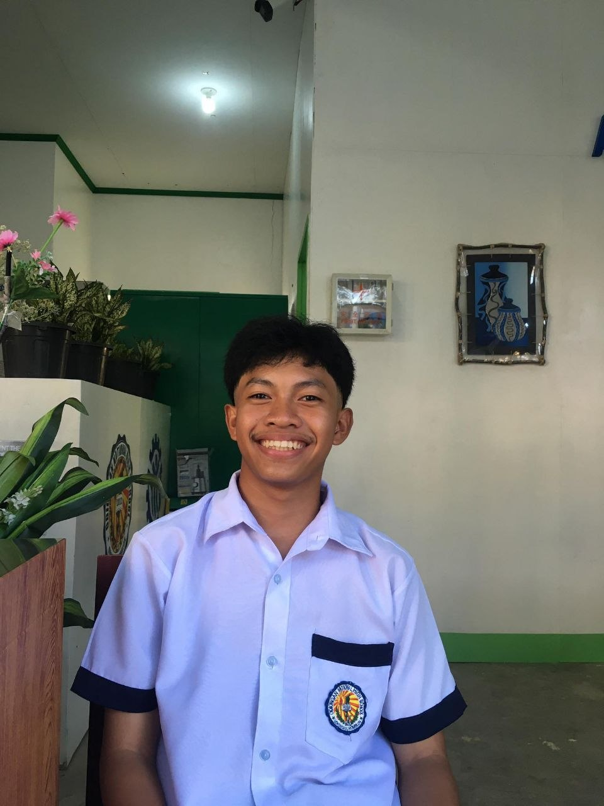

Age: 20 years old
Date of Birth: April 6, 2006
Place of Birth: Mandaluyong, Manila
Gender: Male
Civil Status: Taken
Religion: Pentecostal Missionary Church of Christ
Nationality: Filipino
Father: Roderick P. Casero
Occupation: Truck Driver
Mother: Genalyn M. Casero
Occupation: Call Center Agent
+63905-507-0128
Liwanag, Odiongan, Romblon
justinecasero2006@gmail.com
@justine.kyle.776670
Kitchen Staff - Harbour Chateau Hotel
(May 2024 - April 2024)
Encoder - Municipal Town Hall Odiongan
(October 2024 - September 2024)
TERTIARY EDUCATION
Romblon State University - Main Campus
Bachelor of Science in Information Technology
Liwanag, Odiongan, Romblon
2024 - 2027
SECONDARY EDUCATION
Odiongan National High School
Dapawan, Odiongan, Romblon
2018 - 2024
ELEMENTARY EDUCATION
Malagasang II Elementary School
Malagasang II, Imus, Cavite
2013 - 2018